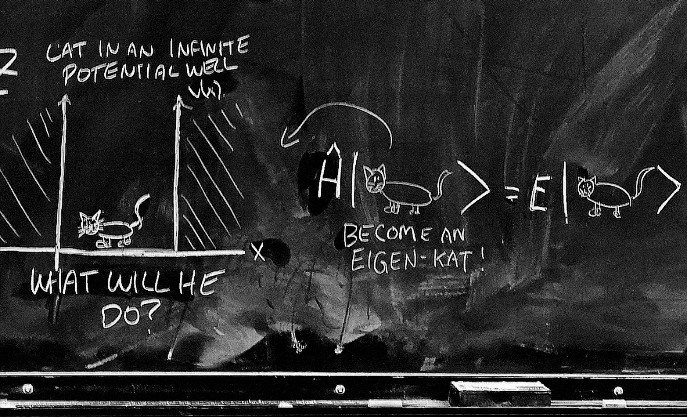
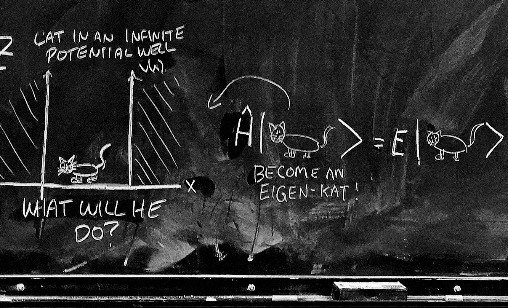

About Ingrid
I am a fourth-year student at Harvey Mudd College majoring in Computer science and concentrating in music. I'm expected to graduate in 2023 Spring.
My research interests include human-computer interaction, human-robot interaction and quantum information.
Specifically, I am enthusiastic about Robot ethics, natural language processing, quantum algorithms, and quantum machine learning.
As an undergrad student, I enjoy the opportunity to research in different labs and absorb cutting-edge knowledge in various fields.
While science fascinates me, my goal in software development is to represent creative concepts through concrete code to make technology more approachable.
I aspire to be a researcher and software engineer who is aware of the social implications of their work.
Besides being a student, I serve as a grader and tutor for several classes at Harvey Mudd College, including Principles and Practice of Computer Science, Algorithms, Natural Language Processing, and Modern Physics Lab.
The TA experience is valuable for its unique connections with other students, especially under the influence of pandemic.
When I'm not working, I'm dancing or climbing rocks.